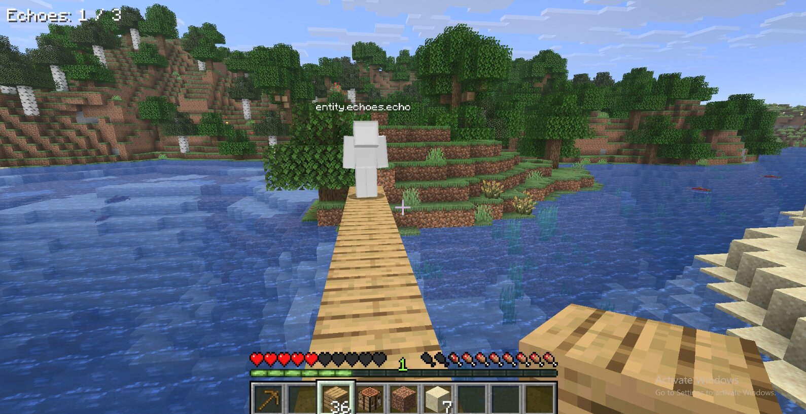

ECHoesLABput your Minecraft screenshot here
01
EchoesLab
A Minecraft experiment that records what I do and lets ghost-like Echoes play it back. It started with a very simple question: what if I could teach a character by just doing the task once?
view the chaos →